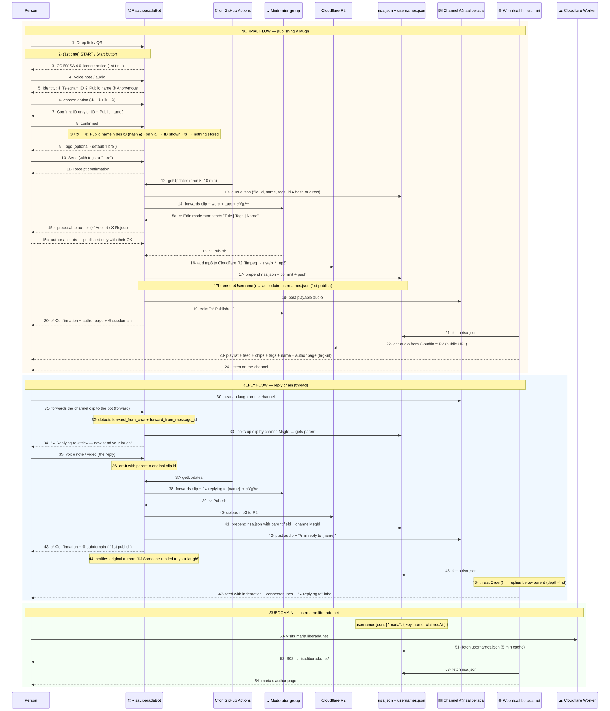
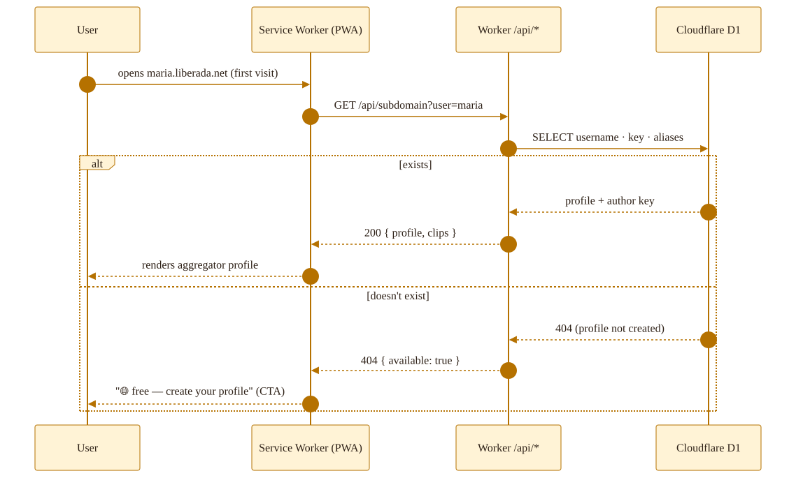
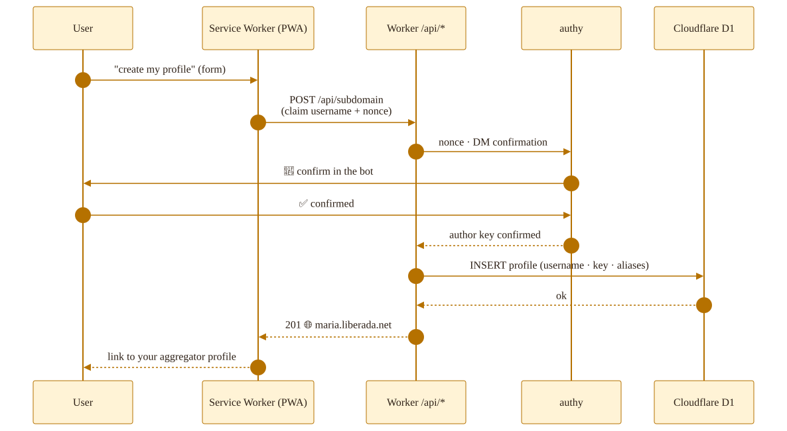

LocalHost · Solo distro
A rich playstore in your device.A rich playstore in your device.
Flove apps do a high quality mining of yourself, so better do that privately and later share whatever you want, anytime you feel like. … In another side of things, pure AI code can be very creative but it's not reliable when you need connecting and scaling many pieces within it. So we suggest you playing very designed apps that are fully self-contained in one file each within a LocalHost and export results in JSON for later further sharing those if wanted.Flove apps do a high quality mining of yourself, so better do that privately and later share whatever you want, anytime you feel like. … In another side of things, pure AI code can be very creative but it's not reliable when you need connecting and scaling many pieces within it. So we suggest you playing very designed apps that are fully self-contained in one file each within a LocalHost and export results in JSON for later further sharing those if wanted.
❯ ./flove --local-first --offline
✓ distro local-first · sin backend · file:// · service worker precargadolocal-first distro · no backend · file:// · preloaded service worker
✓ 8 apps · 4 subcarpetas · flove-solo.zip + APK TWA
Cuatro formas de ejecutar floveFour ways to run flove
Escritorio · .zipDesktop · .zip
Descarga y ejecuta START-FLOVE en local.Download and run START-FLOVE locally.
.zipDesktop · .zipDescarga flove-solo.zip, descomprime y ejecuta START-FLOVE-<os> (sirve flove-solo/ en localhost:8642).Download flove-solo.zip, unzip it and run START-FLOVE-<os> (it serves flove-solo/ on localhost:8642).
Android · Termux
Directo en el móvil — offline, sin red.Straight on the phone — offline, no network.
Ejecútalo directo en el móvil en Termux (offline, sin red) con el comando de instalación-y-servido de la home.Run it straight on your phone in Termux (offline, no network) with the install-and-serve command from the home page.
Por la red (Red)Over the network
Alcanza la instancia desde otro dispositivo.Reach the instance from another device.
Alcanza la instancia en marcha desde otro dispositivo — mismo Wi-Fi, o por Tailscale desde cualquier red vía HTTPS.Reach the running instance from another device — same Wi-Fi, or over Tailscale from any network via HTTPS.
App Android .aabAndroid app .aab
El TWA listo, publicado en GitHub Releases.The ready-made TWA, published on GitHub Releases.
.aabAndroid app .aabLa app Android lista (sin Termux): el TWA en solo/flove-apk/, publicado en GitHub Releases como flove.aab.The ready Android app (no Termux): the TWA in solo/flove-apk/, published on GitHub Releases as flove.aab.
La canalización de la distro (pipeline)How the distro is built (pipeline)
-
01 BuildBuild
solo/build-flove-zip.shempaqueta las apps desolo/enflove-solo.zip.solo/build-flove-zip.shpackages thesolo/apps intoflove-solo.zip. -
02 Service workerService worker
solo/sw.jsse genera connode solo/build-sw.mjs(nunca a mano); precachea la lista de apps publicadas para funcionar offline.solo/sw.jsis generated withnode solo/build-sw.mjs(never by hand); it precaches the published app list so everything works offline. -
03 DescargaDownload
El zip viaja desde flove.org como
flove.zip, también adjunto a GitHub Releases.The zip travels from flove.org asflove.zip, also attached to GitHub Releases. -
04 Android TWAAndroid TWA
solo/flove-apk/construye el APK/AAB que envuelve flove.org como Trusted Web Activity (se reconstruye solo cuando cambia el manifest; el contenido se actualiza solo).solo/flove-apk/builds the APK/AAB that wraps flove.org as a Trusted Web Activity (it is rebuilt only when the manifest changes; content updates on its own). -
05 routing.json
Escaneo de meta-tags de
apps/*/[name].html(id, nombre, url, tier, descripción, tags) →routing.jsonen la raíz del zip.Scans the meta-tags ofapps/*/[name].html(id, name, url, tier, description, tags) →routing.jsonat the zip root.
Apps de la distroDistro apps
Catálogo de apps · agrupado por categoríasApp catalog · grouped by category
El índice completo de apps por colores de flove: cada app bajo su categoría principal (Inside · Mating · Linguistics · Social · Economy). Los enlaces abren cada app en localhost.flove's full app index by colour: each app under its main category (Inside · Mating · Linguistics · Social · Economy). The links open each app in localhost.
apps/
36 apps
5 categorías5 categories
todas las appsall the apps
-
Inside· orange12 apps -
Mating· yellow9 apps -
Linguistics· green5 apps -
Economy· indigo4 apps
Version 1
De nota de voz a perfil webFrom voice note to web profile
Un bot de Telegram recoge notas de voz, un grupo humano modera, y todo lo aprobado acaba como MP3 en Cloudflare R2 con su entrada en risa.json; la web lee el feed, lo anida y enriquece su entorno para reproducirlo en diversas listas (tags y perfil) y poder contestar a el, con un clip nuevo o solapado al citado.A Telegram bot collects voice notes, a human group moderates, and everything approved ends up as an MP3 on Cloudflare R2 with its entry in risa.json; the web reads the feed, nests it and enriches its surroundings to play it in several lists (tags and profile) and to reply to it — with a new clip or one overlapped on the quoted one.
Flujo v1 · hiloFlow v1 · thread descargar PNG ↗download PNG ↗
{kind=link}

Flujo v1 · panoramaFlow v1 · overview descargar PNG ↗download PNG ↗
{kind=link}

Subdominio · keys ya cogidas y aliasesSubdomain · taken keys and aliases descargar PNG ↗download PNG ↗
{kind=link}

Las piezasThe pieces
- Repositorio público — código, feed
risa.jsony la web, todo en un solo repo.Public repository — code, therisa.jsonfeed and the web, all in a single repo. - Bot de Telegram — @BotFather te da el token y crea el bot.Telegram bot — @BotFather gives you the token and creates the bot.
- Canal + grupo de moderación — el canal publica; un grupo privado aprueba o rechaza.Channel + moderation group — the channel publishes; a private group approves or rejects.
- Cloudflare R2 — almacenamiento gratuito (10 GB) para los audios, con URL pública.Cloudflare R2 — free storage (10 GB) for the audios, with a public URL.
- GitHub Actions — un cron llama al bot cada 5–10 minutos para vaciar la cola.GitHub Actions — a cron calls the bot every 5–10 minutes to drain the queue.
Las dos ideas claveThe two key ideas
Que ya funciona - Resumen de característicasAlready working — feature summary
La v1 ya trae esto funcionando, feature a feature, y cada pieza está escrita para una sola cosa: sin build, sin servidor y sin coste. Lo que queda se vive en la pestaña Desarrollo (v2).The v1 already ships this working, feature by feature, and each piece is written for a single purpose: no build, no server, no cost. What remains lives in the Develop tab (v2).
Web — el escaparateWeb — the shop window
- App de archivo único: HTML + CSS + JS, sin build y sin dependenciasSingle-file app: HTML + CSS + JS, no build and no dependencies
- Servida desde GitHub Pages: estático, HTTPS, coste ceroServed from GitHub Pages: static, HTTPS, zero cost
- Un solo feed (
risa.json) como fuente de verdad de la webA single feed (risa.json) as the web's source of truth - Dos playlists (risas del mundo + risas de la gente) con un reproductor factory compartidoTwo playlists (world risas + people risas) with a shared factory player
- Reproductor inline: play/pausa, anterior/siguiente y lista de pistasInline player: play/pause, previous/next and track list
- El feed puede incluir vídeo (mp4/webm) de otros bots sin tocar la webThe feed can include video (mp4/webm) from other bots without touching the web
- «Últimas risas»: feed de las últimas n piezas (por defecto 6)"Latest risas": feed of the last n pieces (6 by default)
- Chips de etiquetas filtrablesFilterable tag chips
- Nube de tags flotante con colisiones evitadas (
floatChips)Floating tag cloud with collisions avoided (floatChips) - Búsqueda por tag · título · nombreSearch by tag · title · name
- Favoritos ❤️/⭐ compartidos por las dos playlistsFavourites ❤️/⭐ shared across both playlists
- Paginador del feedFeed paginator
- Página de autor
#/u/<key>con su propio feedAuthor page#/u/<key>with its own feed - Hilos: cadenas de respuesta infinitas (
parent) con conectores visuales y etiqueta del autor respondidoThreads: infinite reply chains (parent) with visual connectors and replied-author label - Subdominio de autor opt-in:
username.liberada.netsolo con «Sí, quiero» tras publicar (nunca automático)Opt-in author subdomain:username.liberada.netonly with "Yes, I want it" after publishing (never automatic) - Perfil agregador genérico:
liberada.net/usa/<username>/unifica risas + amasGeneric aggregator profile:liberada.net/usa/<username>/unifies risas + amas - Compartir por WhatsApp, Telegram, e-mail y copiarShare via WhatsApp, Telegram, e-mail and copy
- QR del deep link
t.me/RisaLiberadaBotpara escanearQR of thet.me/RisaLiberadaBotdeep link to scan - Imágenes y audio servidos desde R2 con URL pública (no desde GitHub)Images and audio served from R2 with a public URL (not from GitHub)
- Procedencia y licencia de cada pieza, enlazada a su ficha en CommonsProvenance and licence of each piece, linked to its Commons sheet
- Carrusel de beneficios de la risa (20 datos) que conecta con la sección cienciaCarousel of laughter benefits (20 facts) linking to the science section
Bot — el circuito serverlessBot — the serverless circuit
- Ingesta por Telegram: audios y vídeos de hasta 1 minTelegram ingestion: audios and videos up to 1 min
- Límites duros: 10 MB por pieza, 5 en cola y 5 al día por remitenteHard limits: 10 MB per piece, 5 queued and 5 per day per sender
- Validación de tipo, extensión, tamaño y duración antes de subirType, extension, size and duration validation before uploading
- Offset persistido e idempotencia en
getUpdates(ni pérdidas ni duplicados)Persisted offset and idempotency ingetUpdates(no losses, no duplicates) - Long polling de 25 s: sin endpoint público y sin webhook25 s long polling: no public endpoint and no webhook
- Cron de GitHub Actions como motor (cada 5–10 minutos)GitHub Actions cron as engine (every 5–10 minutes)
- Identidad al subir: nombre público, id de Telegram o anónimaIdentity on upload: public name, Telegram id or anonymous
- Handle estable por palabra + hash salado (nunca
@username)Stable handle from word + salted hash (never@username) - Formulario guiado con botones inline: descripción, etiquetas y visibilidadGuided form with inline buttons: description, tags and visibility
- Reenviar clip del canal → cadena: detecta forward, propone respuesta, publica con
parentForward from the channel → chain: detects the forward, proposes a reply, publishes withparent - Ciclo detectado:
hasAncestor()impide A→B→…→ACycle detected:hasAncestor()prevents A→B→…→A - Normalización a MP3 con
ffmpegNormalisation to MP3 withffmpeg - Subida a Cloudflare R2 con firma SigV4 propia (cero dependencias)Upload to Cloudflare R2 with its own SigV4 signature (zero dependencies)
- La pieza aprobada antepone a
risa.json(git como base de datos)The approved piece prepends torisa.json(git as database) - Commit + push automáticos del feedAutomatic commit + push of the feed
- Publicación en el canal público @risaliberadaPublishing to the public channel @risaliberada
- Moderación humana en grupo privado: ✅ publicar, 🗑 borrar, ✏️ proponer detallesHuman moderation in a private group: ✅ publish, 🗑 delete, ✏️ propose details
- Edición con visto bueno del autor: nadie publica contra su voluntadEditing with the author's approval: nobody publishes against their will
- Confirmaciones y avisos en español (subida, aprobación, rechazo, publicación)Confirmations and notices in Spanish (upload, approval, rejection, publication)
- Reconocimiento de decisiones por palabra («ok», «sí», «no», «borrar»…)Word-based decision recognition ("ok", "yes", "no", "delete"…)
- Mensajes malformados nunca tumban el bucle:
parseUpdateses una función puraMalformed messages never crash the loop:parseUpdatesis a pure function - Bienvenida con las reglas claras (1 min, 10 MB, 5 al día)Welcome with the clear rules (1 min, 10 MB, 5 per day)
- Cliente de Telegram con timeout y manejo de errores de redTelegram client with timeout and network error handling
- Scripts de mantenimiento:
migrate-r2.mjsysync-media.mjsMaintenance scripts:migrate-r2.mjsandsync-media.mjs
E · Comandos del bot — mínimos, de solo lectura y reproducciónE · Bot commands — minimal, read & play only v1
- Base:
/me·/stats·/profile·/status·/queueBase:/me·/stats·/profile·/status·/queue - Exploración:
/latest·/random·/now·/since·/today·/trendingExplore:/latest·/random·/now·/since·/today·/trending - Reproducción:
/play(recorre el feed, el mismo que la web)Playback:/play(walks the feed, the same one as the web) - Perfil:
/entrar(miniapp) ·/mejorar(novedades) ·/name(nombre público) ·/usuario(subdominio) ·/pub(mostrar @)Profile:/entrar(miniapp) ·/mejorar(what's new) ·/name(public name) ·/usuario(subdomain) ·/pub(show @) - Todo es de solo lectura y reproducción: nada escribe; los comandos de perfil mutan solo en DMEverything is read & play only: nothing writes; profile commands mutate only in DM
Moderación y confianzaModeration & trust
- Solo los moderadores del grupo pueden aprobar o rechazarOnly the group's moderators can approve or reject
- Nada se publica sin revisión humana (un par de ojos antes del canal)Nothing is published without human review (a pair of eyes before the channel)
- Gate de aceptación: la edición propuesta se publica solo si el autor aceptaAcceptance gate: the proposed edit is published only if the author accepts
- Certificación «autenticado en Telegram» en la página de autor (un moderador aceptó tu post)"Authenticated on Telegram" certification on the author page (a moderator accepted your post)
- Enlace a t.me solo con opt-in explícito (nunca automático)t.me link only with explicit opt-in (never automatic)
- Cuota y cola por remitente como anti-abusoPer-sender quota and queue as anti-abuse
- Licencia CC BY-SA 4.0 declarada en cada pieza publicadaCC BY-SA 4.0 licence declared on every published piece
Página de autor — tag-urlAuthor page — tag-url
- Cada publicación genera su tag-url
#/u/<key>automáticamenteEvery publication generates its#/u/<key>tag-url automatically - El bot envía la URL de tu página en el aviso de publicación — funciona aunque solo añadas nombre públicoThe bot sends your page URL in the publication notice — it works even with just a public name
- Feed propio con todas tus risasYour own feed with all your risas
- El reproductor de la página reutiliza el reproductor globalThe page's player reuses the global player
- Enlace a t.me solo si hay opt-int.me link only with opt-in
- Avatar con inicial y fecha relativa (
timeAgo)Avatar with initial and relative date (timeAgo)
Privacidad y datosPrivacy & data
- Nunca se guardan ids de Telegram en claro en el repoTelegram ids are never stored in clear in the repo
- Origen oscurecido: el handle público es un hash salado de la identidadObscured origin: the public handle is a salted hash of the identity
- Anónimo es una opción real al subir (y la más común)Anonymous is a real option on upload (and the most common)
- Esquema
risa.jsonversionado:id,t,name,tags,src,when,tg,keyVersionedrisa.jsonschema:id,t,name,tags,src,when,tg,key - Retrocompatible: el feed puede ser array (v1) u objeto
{flag, clips}Backwards compatible: the feed can be an array (v1) or an object{flag, clips} - Addons por flag: se activan desde la interfaz sin romper lo publicadoAdd-ons via flag: enabled from the UI without breaking what's published
- Feed agregable: puede sumar risas de otros bots (vídeo incluido)Aggregable feed: it can add risas from other bots (video included)
- Guardarraíles del contrato: las claves desconocidas de
flove.jsonse ignoranContract guardrails: unknownflove.jsonkeys are ignored
Integración con floveIntegration with flove
flove.jsonenriquece sin interrumpir: timeout de 4 s y fail-silentflove.jsonenhances without interrupting: 4 s timeout and fail-silent- Regla de oro:
risa.jsones la verdad;flove.jsonsolo añade, nunca al revésGolden rule:risa.jsonis the truth;flove.jsononly adds, never the other way round - Al claim (v2), el enlace lleva al perfil único de flove donde ves tus risas y activas Lovy ya autenticadoOn claim (v2), the link leads to flove's single profile where you see your risas and enable Lovy already authenticated
Infraestructura y hostingInfrastructure & hosting
- Coste cero: R2 (10 GB gratis) + Pages + ActionsZero cost: R2 (free 10 GB) + Pages + Actions
- Sin servidor propio y sin base de datos: git + archivosNo own server and no database: git + files
- Secretos de GitHub Actions (BOT_TOKEN, CHANNEL_ID, MOD_GROUP_ID, R2_*)GitHub Actions secrets (BOT_TOKEN, CHANNEL_ID, MOD_GROUP_ID, R2_*)
- Uploader R2 propio (SigV4) que sustituyó a Cloudinary por falta de permisoOwn R2 uploader (SigV4) that replaced Cloudinary for lack of permission
- Migración de prefijos y reescritura de URLs lista en
migrate-r2.mjsPrefix migration and URL rewriting ready inmigrate-r2.mjs - Medios sincronizados a R2 con
sync-media.mjs(idempotente)Media synced to R2 withsync-media.mjs(idempotent) - Replicable en una tarde: clona, lee el estándar, lanza tu bot, tu bucket y tu canalReplicable in an afternoon: clone, read the standard, launch your bot, your bucket and your channel
- El sitio se sirve dentro de flove.org, que además precachea offline (service worker)The site is served inside flove.org, which also precaches offline (service worker)
Calidad y documentaciónQuality & documentation
- Suite de tests
node --test: 91 verdes sobre la lógica del bot y de la webnode --testtest suite: 91 green on the bot and web logic - Ayudantes puros compartidos:
risa.jscorre igual en la web y en NodeShared pure helpers:risa.jsruns the same in the web and in Node - Verificación con jsdom sin navegador (harness repetible)Browser-less jsdom verification (repeatable harness)
- Chequeo de sintaxis
node --checken todos los archivosnode --checksyntax check on every file - Estándar RisaLiberada v1 documentado: flujos, datos, identidad, hosting y licenciaDocumented RisaLiberada v1 standard: flows, data, identity, hosting and licence
- Diagramas mermaid (thread + flow) versionados junto al estándarVersioned mermaid diagrams (thread + flow) alongside the standard
- Plan de v2 centralizado en
plan-v2.mddel estándarv2 plan centralised in the standard'splan-v2.md - Vocabulario consistente: los nombres del código coinciden con el texto de la interfazConsistent vocabulary: code names match the interface text
Accesibilidad y experienciaAccessibility & experience
prefers-reduced-motionrespetado (animaciones off)prefers-reduced-motionrespected (animations off)- Teclado: flechas en carruseles, foco visible en chips y botonesKeyboard: arrows in carousels, visible focus on chips and buttons
aria-labely roles en los controles importantesaria-labeland roles on the important controls- Contraste alto sobre crema/inkHigh contrast on cream/ink
altdescriptivo en todas las imágenesDescriptivealton all images- Carga perezosa (
loading="lazy") de imágenesLazy loading (loading="lazy") of images - Audio con
preload="none"(no descarga hasta reproducir)Audio withpreload="none"(no download until playback) - Micro-interacciones solo con CSS, sin JavaScript de másCSS-only micro-interactions, no extra JavaScript
- El botón de la risa reproduce un clip al toque (detalle audiovisual)The risa button plays a clip on tap (audio-visual detail)
- QR + deep link pensados para compartir desde el móvilQR + deep link made for sharing from mobile
Descarga y monta la tuyaDownload it and make your own
Código abierto, sin servidor, sin coste. Clona el repo, lanza tu bot y empieza a publicar risas en una tarde.Open source, no server, no cost. Clone the repo, launch your bot and start publishing risas in an afternoon.
Agentes — un prompt para montar el sistemaAgents — one prompt to build the system
La versión mini: un único prompt que convierte a un agente (IA) en el encargado de montar todo el sistema en tu proyecto. Cópialo, pégaselo y supervisa el resultado.The mini version: a single prompt that turns an AI agent into the one in charge of building the whole system in your project. Copy it, paste it to the agent and supervise the result.
Rol: asiste a montar el proyecto «mi proyecto», inspirándote en el proyecto libre github.com/floveorg/risa. Objetivo: sistema completo — subida de audio · vídeo por Telegram → moderación → publicación en canal + feed web. Sin servidor propio. Datos: - Bot: @TuBot — cron Actions 5–10 min - Contenido: audio · vídeo - Feed: risa.json · newest-first - Campos por pieza: título · etiquetas · autor. Requisitos (release completa): piezas ≤ 1 min · ≤ 10 MB · máx. 5 en cola y 5 al día · CC BY-SA 4.0 («Enviar = consentir», tag «libre») · página de autor #/u/<key> con feed propio · comandos de solo lectura /me · /stats · /profile · /status · /queue · /latest · /now · /today · /since · /random · /trending · /play · etiquetas → chips · búsqueda · favoritos (filtro local) · entrada por deep link + QR · repo dedicado con Pages · feed risa.json newest-first. Pasos: 1. Clona el repo de referencia; estudia bot/, index.html, risa.json y .github/workflows. 2. Pide y valida los secretos (BOT_TOKEN, CHANNEL_ID, MOD_GROUP_ID, credenciales R2) antes de usarlos. 3. Configura GitHub Actions como cron que llame a getUpdates cada 5–10 minutos. 4. Monta el feed risa.json y la web en GitHub Pages. 5. Verifica de punta a punta con una prueba real de audio · vídeo. Permisos: leer/escribir el repo del proyecto, instalar dependencias de Node, desplegar Pages y Actions. Nada fuera del repo; confirma antes de crear credenciales. Restricciones: sin servidor ni base de datos propios; piezas gratuitas (R2, Pages, Actions); respeta la privacidad (nunca guardar ids de Telegram en claro). Responde en español.
Making of…Making of…
Profile
Profile to manage Social data.Profile to manage Social data.
Gestiona tu identidad pública: nombre, @ y subdominio bajo tu clave. Agrega todo lo que publicas y compartes — risas, playlists y favoritos — en un solo perfil. Solo lectura por defecto: tus datos siguen privados hasta que decidas compartirlos.Manage your public identity: public name, handle and subdomain under your key. Aggregate everything you publish and share — risas, playlists and favourites — in one profile. Default read & play only: your data stays private until you decide to share it.
El desarrollo continua con estas mejoras:Development continues with these improvements:
Mejoras que propone v2What v2 proposes
- Perfiles más sólidos y extendidos. SQL via Service Workers de Cloudflare: datos locales rápidos, sin servidor propio, con sync offline.Stronger, extended profiles. SQL via Cloudflare Service Workers: fast local data, no own server, with offline sync.
- Autenticación y protección de cuenta. Recoveries: mail, OAuth, browsy, nety… la identidad se respalda y recupera.Authentication and account protection. Recoveries: mail, OAuth, browsy, nety… the identity is backed up and recoverable.
- Integración con otras apps-bots. Liberada, Ama… la risa conecta estrictamente con el resto del circuito.Integration with other bot-apps. Liberada, Ama… risa connects strictly to the rest of the circuit.
- Playlists de favoritos. Con URL propia: comparte tu selección con un enlace.Favourites playlists. With their own URL: share your selection with a link.
- Cadenas enriquecidas. Risas encadenadas con contexto: respuestas, hilos, historias.Rich chains. Risas chained with context: replies, threads, stories.
- Comandos avanzados. Más control desde el bot: gestionar, buscar, filtrar, ordenar.Advanced commands. More control from the bot: manage, search, filter, sort.
Flujo v2Flow v2 descargar PNG ↗download PNG ↗
{kind=link}

Service Worker · pedir el perfil de subdominioService Worker · request the subdomain profile descargar PNG ↗download PNG ↗
{kind=link}

Service Worker · crear el perfil de subdominioService Worker · create the subdomain profile descargar PNG ↗download PNG ↗
{kind=link}

flove.json · risa.json · lovy.json
flove.json · cómo enriquece sin interrumpirhow it enriches without interrupting
Risa es autosuficiente: la web carga siempre su propio risa.json. Después, y solo después, hace una llamada opcional a flove.json que enriquece cuando responde y calla cuando no:Risa is self-sufficient: the web always loads its own risa.json. After — and only after — it makes an optional call to flove.json that enriches when it answers and stays quiet when it doesn't:
- Enriquecimiento progresivo, fail-silent. Si
flove.jsonfalla (404, timeout, CORS), la web queda exactamente igual: sin enlaces, sin esperas, sin bloquear el feed.Progressive, fail-silent enrichment. Ifflove.jsonfails (404, timeout, CORS), the web stays exactly as is: no links, no waits, no blocking the feed. - Regla de oro.
risa.jsones la verdad del feed;flove.jsonsolo añade. Nunca al revés.Golden rule.risa.jsonis the feed's truth;flove.jsononly adds. Never the other way round. - Al claim (authy). Tu palabra reclamada se vuelve un enlace al perfil único de flove (
flove.org/users/<key>/): ahí ves tus risas y al lado puedes activar Lovy ya autenticado — mismo authy, sin volver a loguearte.On claim (authy). Your claimed word becomes a link to flove's single profile (flove.org/users/<key>/): there you see your risas and, next to it, you can enable Lovy already authenticated — same authy, no need to log in again. - Guarda-rrallas. Timeout de 4 s, se dispara tras renderizar el feed, lee solo claves conocidas (lo nuevo se ignora) y el contrato vive versionado en git: si se rompe, se pierde enriquecimiento, nunca risa.Guardrails. 4 s timeout, fired after the feed renders, reads only known keys (anything new is ignored), and the contract lives versioned in git: if it breaks, you lose enrichment, never risa.
Shared CSS and JS
El feed risa.json es la capa de datos compartida; la siguiente capa es de código: el reproductor factory de las dos playlists y la nube de tags son los candidatos naturales — hoy viven repetidos en la web, mañana serían un <script data-flove-js src="flove.js"> y un <link data-flove-css href="flove.css"> que las apps del circuito comparten sin duplicar.The risa.json feed is the shared data layer; the next layer is code: the two playlists' factory player and the tag cloud are the natural candidates — today they live duplicated across the web, tomorrow they would be a <script data-flove-js src="flove.js"> and a <link data-flove-css href="flove.css"> that the circuit's apps share without duplicating.
- Mismo esqueleto, misma voz. Playlists y
floatChipsse escriben una vez (enflove.css/flove.jsdel área compartida) y cada app los declara con marcadoresdata-flove-css/data-flove-jsapuntando aflove.org/appy/.Same skeleton, same voice. Playlists andfloatChipsare written once (in the shared area'sflove.css/flove.js) and each app declares them withdata-flove-css/data-flove-jsmarkers pointing toflove.org/appy/. - Enriquecimiento aditivo, nunca requisito. Igual que
flove.json: si la librería no llega (file://, red, fallo), la app se queda con su copia local y nadie lo nota. Combinado confloatChips, las chips que ya flotan en esta web flotarían igual en todas.Additive enrichment, never a requirement. Likeflove.json: if the library doesn't arrive (file://, network, failure), the app keeps its local copy and nobody notices. Combined withfloatChips, the chips that already float on this web would float the same on all of them.
Else
V3 Navegador & V4 P2P
Browsy v3, la extensión que da identidad y confianza, y Nety v4, Red P2P y computación distribuida.Browsy v3, the extension that gives identity and trust, and Nety v4, a P2P network and distributed computing.
Browsy v3 · la extensiónBrowsy v3 · the extension
Browsy v3 · características técnicasBrowsy v3 · technical features
- MV3 con polyfill V2 para Firefox — service worker en background y content scripts como puente; el frontend vive en central, Browsy es solo el cerebro de confianza.MV3 with a V2 polyfill for Firefox — background service worker and content scripts as the bridge; the frontend lives in central, Browsy is only the trust brain.
- content.js = bridge API — expone identidad + confianza a la página solo cuando el dominio es flove.org; el puente responde en <100 ms.content.js = bridge API — exposes identity + trust to the page only when the domain is flove.org; the bridge answers in <100 ms.
- background.js — genera claves ed25519 (Web Crypto,
tweetnaclcomo fallback), menús de contexto, badge y mirror de ajustes.background.js — generates ed25519 keys (Web Crypto,tweetnaclas a fallback), context menus, badge and settings mirror. - Storage —
chrome.storage.localpara el núcleo ychrome.storage.syncpara ajustes; sync unidireccional Browsy → central.Storage —chrome.storage.localfor the core andchrome.storage.syncfor settings; one-way sync Browsy → central. - F2F — verificación QR + challenge; cadenas de confianza de ~100 avales en <2 s.F2F — QR verification + challenge; trust chains of ~100 avals in <2 s.
- Enchufable —
lib/crypto.jsylib/store.jsson los puntos que nety reutilizará.Plug-in ready —lib/crypto.jsandlib/store.jsare the points nety will reuse.
Nety v4 · la redNety v4 · the network
scheduler hace matching + placement y la reputación CRDT + WoT de 2º orden decide la confianza.Nety v4 flow: the gateway mediates between the app and the libp2p network; nodes announce roles, the scheduler does matching + placement and the CRDT + 2nd-order WoT reputation decides trust.Nety v4 · características técnicasNety v4 · technical features
- Rust (edition 2021) — workspace de 16 crates de red + 2 de test; daemon libp2p y CLI por separado.Rust (edition 2021) — workspace of 16 network crates + 2 test ones; libp2p daemon and CLI separately.
- libp2p 0.54 — TCP + Noise + Yamux, DHT Kademlia, Gossipsub, Identify y Ping.libp2p 0.54 — TCP + Noise + Yamux, Kademlia DHT, Gossipsub, Identify and Ping.
- Runner — Wasmtime 24 (WASI preview 1) para imágenes WASM en slots de 1 vCPU / 1 GiB RAM / 8 GiB disco.Runner — Wasmtime 24 (WASI preview 1) for WASM images in slots of 1 vCPU / 1 GiB RAM / 8 GiB disk.
- Storage en cascada — LocalBackend → IPFS (Kubo) → S3 (MinIO) → HybridBackend.Cascading storage — LocalBackend → IPFS (Kubo) → S3 (MinIO) → HybridBackend.
- Crypto — ed25519 + ChaCha20-Poly1305 + argon2id; identidad con keystore cifrado.Crypto — ed25519 + ChaCha20-Poly1305 + argon2id; identity with an encrypted keystore.
- Reputación — CRDT eventualmente consistente y Web of Trust de 2º orden.Reputation — eventually-consistent CRDT and 2nd-order Web of Trust.
- Estado actual — daemon y gateway aún no se comunican (sin bootstrap/mDNS); el gateway usa
InMemoryStoreySocialStoreestá creado pero sin enlazar.Current state — daemon and gateway do not talk yet (no bootstrap/mDNS); the gateway usesInMemoryStoreandSocialStoreexists but is not wired.
El puente · Browsy v3 ⊕ Nety v4The bridge · Browsy v3 ⊕ Nety v4
lib/crypto.js y lib/store.js.The bridge (port-nety): everything Browsy stores and signs locally today moves to the network in Nety — the same DNA, plug-in ready via lib/crypto.js and lib/store.js.